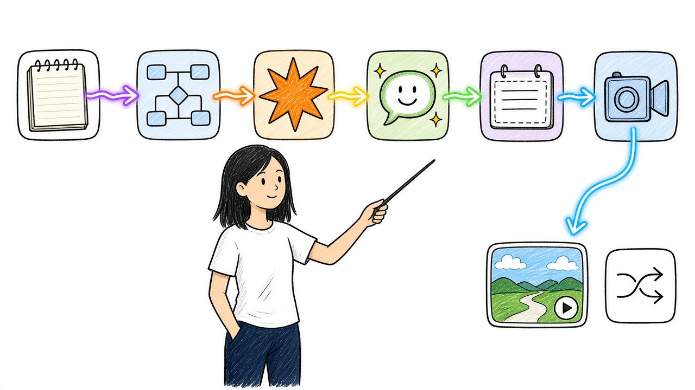
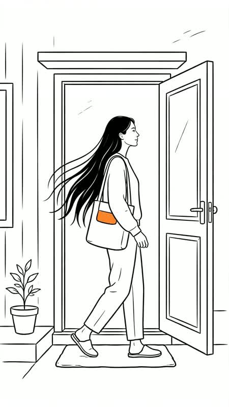
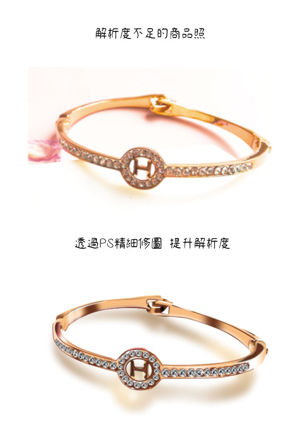

電商 × AI
我的電商辦公室應用進化史
從逐件修圖、寫網頁、手動上架，到把商品資料、文案、分鏡與影片接成一套流程。我用口播與分鏡記錄這段變化。
電商實務 · AI 創作 · 視覺設計
開著小車逛作品，也可以直接點選地圖上的站牌。
直接瀏覽作品方向鍵或 WASD 開車，靠近站牌按 Enter 看作品。手機可用畫面上的方向鍵。

電商 × AI
從逐件修圖、寫網頁、手動上架，到把商品資料、文案、分鏡與影片接成一套流程。我用口播與分鏡記錄這段變化。

英語學習短片
把出門準備、通勤這類日常情境，做成可以跟著練習的英語短片。

視覺設計
用前後對照呈現飾品與保養品的修圖處理，觀察背景、光線與材質細節的差異。
從日常使用 AI 的經驗出發。
AI 使用筆記
提問前，先說清楚三件事：要做什麼、給誰看、希望達到什麼效果。
我是林怡伶。我的作品從電商實務延伸到產品影像、影片與 AI 應用。我喜歡從手上的工作找問題，再試不同的工具，看哪些做法真的能留下來。
在商品內容製作上，我先整理資料，再讓 AI 協助文案或影像流程，最後自己核對與細修。這裡收錄一些實作成果，也記下我學到的方法。